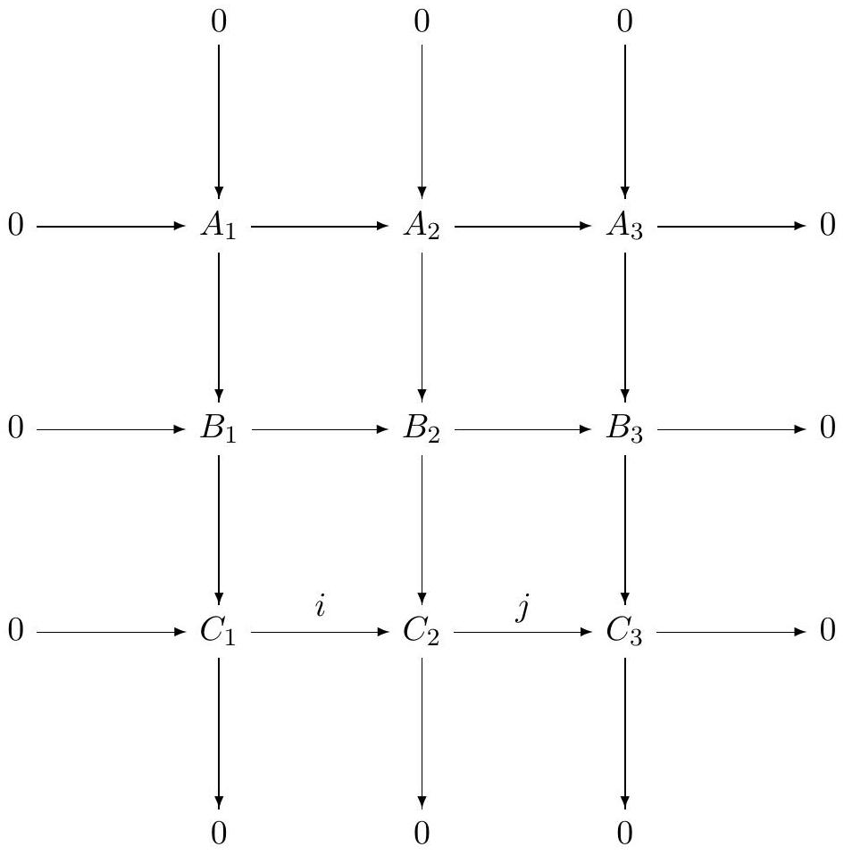

Solve the following problems on your own paper. Be sure your solutions are legible and clearly organized. All work should be your own; no outside sources are permitted. You may use without proof standard results from first-semester differential and algebraic topology; where appropriate you should cite theorems by name.
Suppose is a connected, locally path-connected space whose fundamental group is finite. Prove that every continuous map from to the torus is null-homotopic.
Let and be two copies of the torus , and let be two maps of degrees 2 and 6 , respectively. Let be a fixed base point. Find the fundamental group of the space
where is given by and is given by .
You are given the following commutative diagram of abelian
groups:

The rows are 0 → A₁ → A₂ → A₃ → 0, 0 → B₁ → B₂ → B₃ → 0, and 0 → C₁ → C₂ → C₃ → 0. Each column is 0 → Aᵣ → Bᵣ → Cᵣ → 0, directed downward, for r = 1, 2, 3. In the bottom row, i maps C₁ to C₂ and j maps C₂ to C₃. Every square commutes.
Assume that all columns are exact, and that the first two rows are exact. Prove that the third row is exact at , i.e., that . (Note: in this situation the entire third row is exact, but you need not prove this.)
Consider a space that is the union of two open subsets and such that:
is contractible
both and have the homology of a circle.
a) What are all the possibilities for the homology ?
b) Describe explicit spaces realizing all these possibilities.
Let be a smooth compact manifold without boundary. Show that there is no submersion (i.e., smooth map whose differential is everywhere surjective) for any .
Show that for any the manifold is parallelizable (that is, its tangent bundle is trivial).
Let be a smooth, closed (compact without boundary) -dimensional submanifold of , with . Prove that there exists a line through 0 in which intersects in finitely many points (or is disjoint from ).
Let and be the subsets of defined by
for a real number
.
Justify your responses to the following:
a) Determine all values of
for which
and
are submanifolds of
,
and the intersection
is transverse.
b) Determine all values of
for which
is a submanifold of
.
Suppose , is a smooth map whose differential is injective at each point. Prove that is a diffeomorphism.